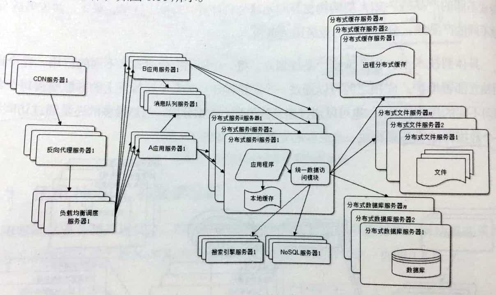

“大型网站技术架构”总结：一，概述
最近集中花了两天时间把这本《大型网站技术架构》看完了，分章节来记录一些干货。本书可以作为架构师入门的第一本书，因为很少涉及到具体的编程或者系统设计，而是以一个宏观的角度讨论了大型网站的架构演进方案。可以让我们从全局的角度来了解架构师的工作和职责，并做到心中有数。
一个好的网站架构设计需要具备以下几个特点：高可用、高性能、易扩展、可伸缩且安全。同时网站的访问特点符合二八定律，即：80%的业务访问集中在20%的数据资源上。网站的技术架构发展应该由其本身的业务发展来驱动，小型网站不应该过于关注高性能的网站架构，而应该从业务做起，当业务规模发展到一定程度时再来考虑技术架构上的发展。大公司的技术架构只能作为参考，不应该盲目跟从，毕竟每家公司的业务流程都是不同的。有时要更加关注于业务层面是否得当，在确定业务流程合理的情况下再进行技术架构上的拓展。

上图为一个大型网站架构的“最终”演化结构图。一个网站架构的发展从最初的单机处理到最后的分布式集群、业务拆分细化，这整个过程中间经历着数次的迭代与重构：
- 初始版本：单机应用（数据库、应用系统、文件系统）；
- 服务分离：多机系统（数据库、应用系统、文件系统各自独立到单独的机器）；
- 增加缓存：解决 DB 压力（本地缓存、远程缓存集群，存放80%的常用数据）；
- 应用集群：应用服务器使用集群（使用 “Load Balance” 调度集群压力）；
- 读写分离：数据库读写分离，主从热备（分离读写操作，主从双备）；
- CDN / 反向代理：提高静态文件传输效率（缓存在反向代理服务器或者使用 CDN 加速）；
- 文件 / 数据集群：文件系统和数据库使用集群（全部服务化，对外部透明）；
- 独立服务：比如微服务架构（独立出各个服务，服务内部单独架构，服务间通过 URL / 服务发现中心来通信）；
常用的大型网站架构模式有：分层、分割、分布式、集群、缓存、异步（共享队列）、冗余、自动化、安全。其中分层和分割是进行后续架构模式的前提，同互联网的七层模型一样，“高耦合低内聚”的独立模块是灵活部署和弹性伸缩的前提。
分层：横向，从逻辑上分层，物理上可以在同一个机器上。比如将网站的结构分为视图层，控制层和数据层（MVC）。各个层次之间要保持相对独立的接口，职责单一明确。
分割：纵向，比如对业务的划分，大的业务部门分割成小的业务部门，每个部门独自负责本部门的业务以及技术架构。
分布式：分布式可以将网站架构的所有资源模块化，每个模块有自己单独的资源池来为自己提供计算，同时分布式也可以增加网站的可用性，增强和提高资源的处理效率。但带来的问题是数据一致性难以保证。
集群：将进行分布式架构后的各个模块以“多机集群”的方式代替“单机”模式，这样的好处是可以通过即时的灾备服务，同时大大提高计算效率。每个集群通过一个 “Load Balance” 透明化的对外提供服务。（*在使用集群的时候要注意对用户 Session 等信息的状态保存不应该与应用服务器放到一起）
缓存：主要包括 CDN、反向代理、分布式缓存和本地缓存。使用缓存的两个前提条件：第一是数据数据访问热点不均衡，把热点数据放入缓存；第二是数据在某个时间段内有效，不会很快过期。
异步（共享队列）：这里我把异步改成“共享队列”，模块化后的业务组件在功能上没有任何的耦合，即组件之间没有功能的先后顺序。所有资源均放入一个共享队列中，由各个组件进行处理，处理后的资源仍会在队列中。各个组件只需要负责队列中自己可以进行处理的资源即可。同时，“共享队列”还可以作为“压力容器”，在高并发访问时用来承载来不及处理的资源，防止资源的阻塞导致服务器宕机进而影响用户体验。
冗余：即一定程度上的服务器冗余运行，数据冗余备份。数据除了需要定期备份，存档的冷备份，还需要即时同步到“从数据库”以实现热备份。
自动化：自动化部署、自动化代码管理、自动化安全检测、自动化监控和报警、自动化失效转移（将故障机器从集群中隔离出去）、自动化失效恢复、自动化降级（通过关闭一些不重要的服务来保证系统负载在一个安全的水平）、自动化资源分配。
安全：加密、验证码、防止攻击、风险控制等。